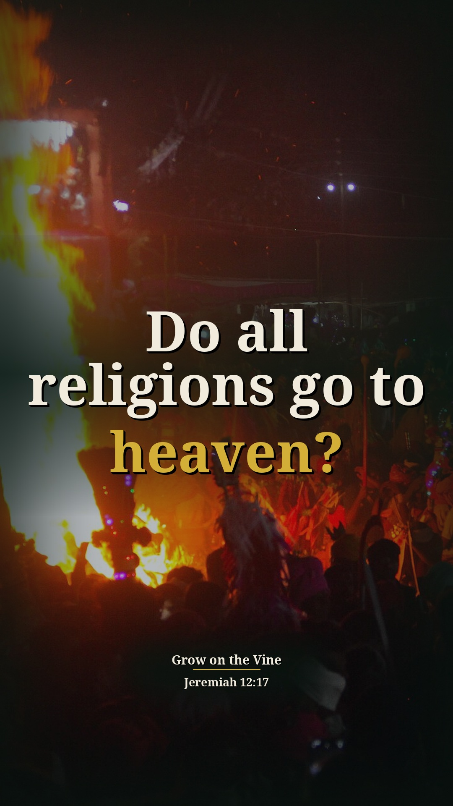
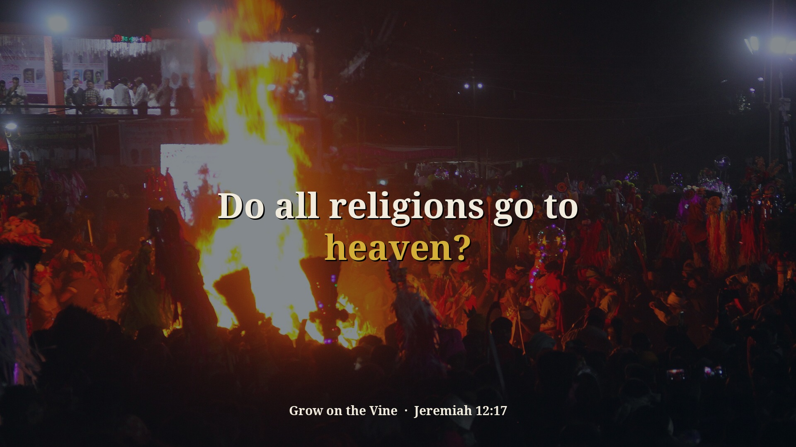
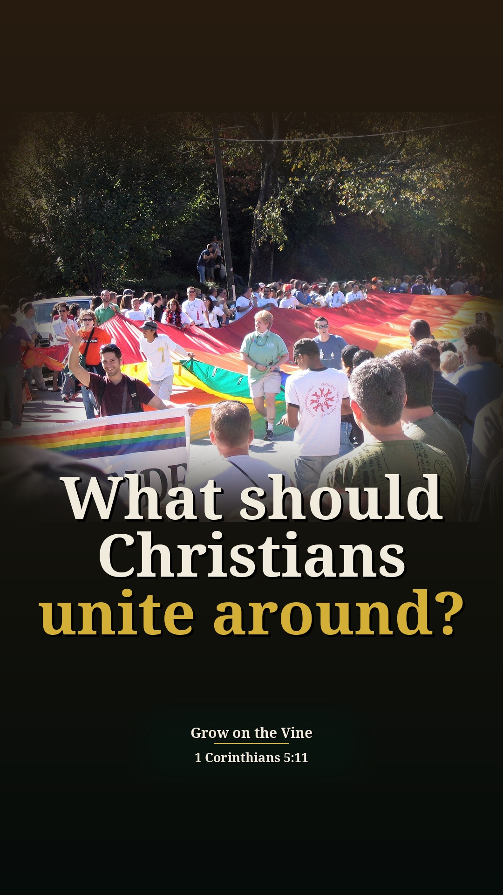
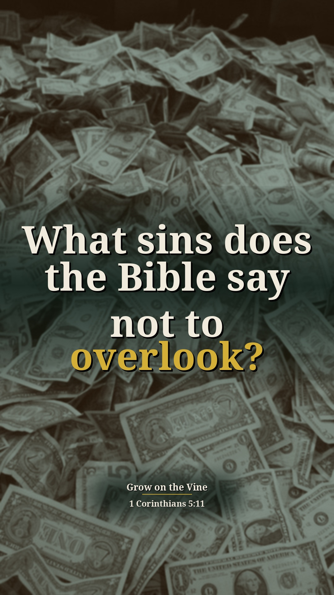
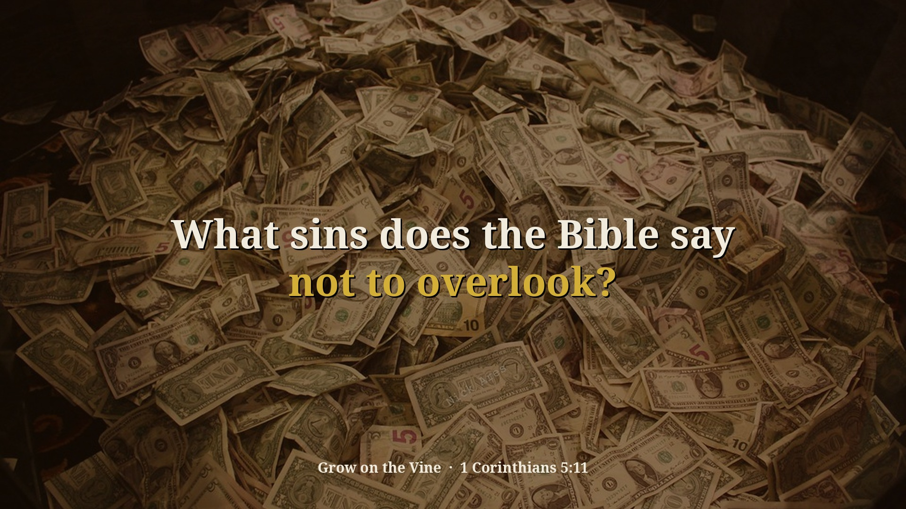
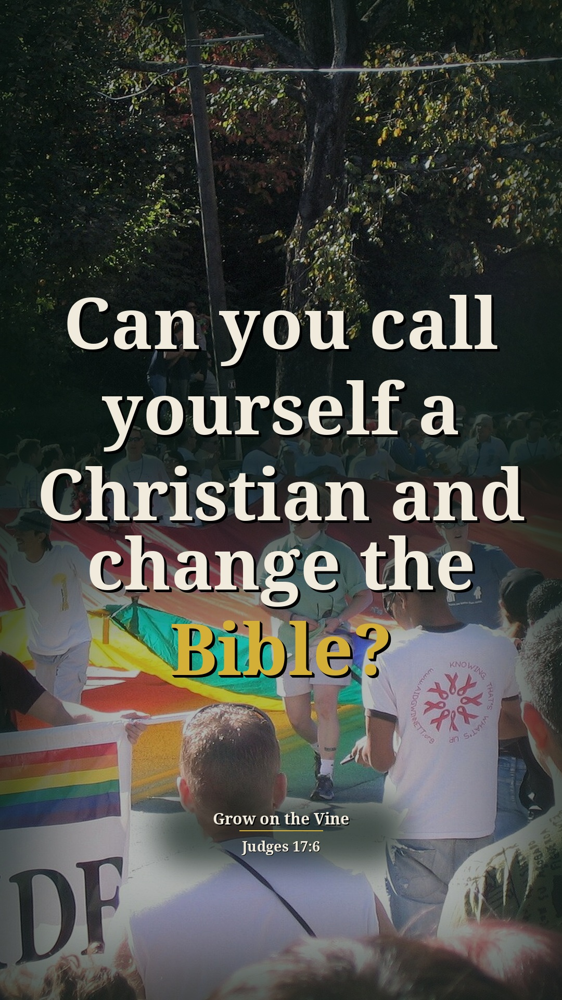

Saving a Nation — 4 new context Shorts (preview)
Preview only, not posted anywhere. Source: 1FewcFhtiz8 · Pastor David G. Kincer. New Shorts from passages on sin and other religions that were skipped before. Each one includes the earlier or surrounding part of the sermon that explains why he says it. Each card follows the clip-page order: video → short answer → his words → Scripture (NKJV) → full message.
Do all religions go to heaven?
Context included: 20:30–21:06 people living carelessly, sinning and still confident they are going to heaven, with no leader to shame them. That is the setting for "Muslims are going to heaven, Hindus..."; it closes with Jeremiah 12:17, the verse he is preaching.
Watch the clip
Our short summary of this clip, not the preacher's exact words
Short answer: No. He says people sin and still feel confident they're going to heaven, and some say all roads lead to the same God: Muslims, Hindus, everybody's going to heaven. Then why did Jesus need to die on the cross? Jeremiah 12:17 says God will pluck up the nation that won't obey.
Why: Jeremiah 12:17: if they will not obey, God will utterly pluck up and destroy that nation.
“I feel I'm going to heaven I have confidence I'm going to heaven”
▶ 20:36
“making our own Gods all roads lead to the same God”
▶ 21:30
“you know Muslims are going to heaven Hindus are going to everybody's going to heaven I don't know why Jesus ever day need to die on the cross”
▶ 21:35
“if they will not obey I will utterly pluck them up and destroy that Nation”
▶ 21:54
Jeremiah 12:17 But if they do not obey, I will utterly pluck up and destroy that nation,” says the LORD.
John 14:6 Jesus said to him, “I am the way, the truth, and the life. No one comes to the Father except through Me.
Full sermon: Saving a Nation — full message page


Other title options:
- Can you sin and still feel sure of heaven?
- What happens when a nation won't obey?
YouTube description (draft)
Do all religions go to heaven? Read the short answer, the Scripture (NKJV) and the pastor's own words: https://growonthevine.com/clips/do-all-religions-go-to-heaven/ To see the full message, click here: https://www.youtube.com/watch?v=1FewcFhtiz8&t=1230s No. He says people sin and still feel confident they're going to heaven, and some say all roads lead to the same God: Muslims, Hindus, everybody's going to heaven. Then why did Jesus need to die on the cross? Jeremiah 12:17 says God will pluck up the nation that won't obey. Jeremiah 12:17 (NKJV) Pastor David G. Kincer · Grow on the Vine Music: "Enchanted Journey" Kevin MacLeod (incompetech.com) Licensed under Creative Commons: By Attribution 4.0 License http://creativecommons.org/licenses/by/4.0/ #Shorts #Bible #Jesus
What should Christians unite around?
Context included: 24:38 "opponents and some believers attacked any church's moral standards" and the Tim Tebow / Dallas pastor story set up the question. 26:58–27:28 he disagrees with that pastor on the rapture and tongues but says those aren't Bible moral issues, which explains why he would unite with him on morals.
Watch the clip
Our short summary of this clip, not the preacher's exact words
Short answer: He says a Dallas pastor was called a hate preacher for opposing same-sex marriage, homosexual acts and adultery. He disagrees with that pastor on the rapture and tongues, but those aren't Bible moral issues; he would unite with him any day on Bible morals. We do not unite over fornication, sexual immorality, homosexuality or incest.
Why: 1 Corinthians 5:11: don't keep company with anyone named a brother who is sexually immoral.
“opponents and some Believers attacked any Church's moral standards”
▶ 24:42
“because of homosexual groups homosexual active groups putting the pressure on Tebow”
▶ 24:57
“they called him a hate preacher”
▶ 25:25
“but I would Unite with this guy any day on Bible morals”
▶ 27:25
“here are the list of things we do not unite over fornication sexual immorality homosexuality incest”
▶ 27:34
1 Corinthians 5:11 But now I have written to you not to keep company with anyone named a brother, who is sexually immoral, or covetous, or an idolater, or a reviler, or a drunkard, or an extortioner—not even to eat with such a person.
Full sermon: Saving a Nation — full message page

Other title options:
- Why was a pastor called a hate preacher?
- What do we not unite over?
YouTube description (draft)
What should Christians unite around? Read the short answer, the Scripture (NKJV) and the pastor's own words: https://growonthevine.com/clips/what-should-christians-unite-around/ To see the full message, click here: https://www.youtube.com/watch?v=1FewcFhtiz8&t=1478s He says a Dallas pastor was called a hate preacher for opposing same-sex marriage, homosexual acts and adultery. He disagrees with that pastor on the rapture and tongues, but those aren't Bible moral issues; he would unite with him any day on Bible morals. We do not unite over fornication, sexual immorality, homosexuality or incest. 1 Corinthians 5:11 (NKJV) Pastor David G. Kincer · Grow on the Vine Music: "Fresh Air" Kevin MacLeod (incompetech.com) Licensed under Creative Commons: By Attribution 4.0 License http://creativecommons.org/licenses/by/4.0/ #Shorts #Bible #Jesus
What sins does the Bible say not to overlook?
Context included: 27:34–27:48 "here are the list of things we do not unite over" is Paul's list in 1 Corinthians 5:11, which he walks through item by item, ending with Romans 16:17.
Watch the clip
Our short summary of this clip, not the preacher's exact words
Short answer: He walks through Paul's list: fornication, sexual immorality, homosexuality, incest, greed, idolatry, a railer who attacks with their voice, a drunkard (one shot of whiskey is intoxication), an extortioner. A believer who says these are okay is not to be fellowshipped; mark those who cause division contrary to the doctrine.
Why: 1 Corinthians 5:11 lists sins a believer must not keep company with; Romans 16:17: note those who cause divisions and avoid them.
“here are the list of things we do not unite over fornication sexual immorality homosexuality incest and all that a Believer wants to say it's okay we are not to fellowship with them”
▶ 27:34
“see with our mouth we attack we destroy”
▶ 28:45
“a drunkard and yet Christians want to drink intoxication and we know now one shot of whiskey is intoxication”
▶ 28:52
1 Corinthians 5:11 But now I have written to you not to keep company with anyone named a brother, who is sexually immoral, or covetous, or an idolater, or a reviler, or a drunkard, or an extortioner—not even to eat with such a person.
Romans 16:17 Now I urge you, brethren, note those who cause divisions and offenses, contrary to the doctrine which you learned, and avoid them.
Full sermon: Saving a Nation — full message page


Other title options:
- Can a Christian say sin is okay?
- Is drinking really a sin?
YouTube description (draft)
What sins does the Bible say not to overlook? Read the short answer, the Scripture (NKJV) and the pastor's own words: https://growonthevine.com/clips/what-sins-does-the-bible-say-not-to-overlook/ To see the full message, click here: https://www.youtube.com/watch?v=1FewcFhtiz8&t=1654s He walks through Paul's list: fornication, sexual immorality, homosexuality, incest, greed, idolatry, a railer who attacks with their voice, a drunkard (one shot of whiskey is intoxication), an extortioner. A believer who says these are okay is not to be fellowshipped; mark those who cause division contrary to the doctrine. 1 Corinthians 5:11 (NKJV) Pastor David G. Kincer · Grow on the Vine Music: "Resolutions Scott Buckley.Mp3" Kevin MacLeod (incompetech.com) Licensed under Creative Commons: By Attribution 4.0 License http://creativecommons.org/licenses/by/4.0/ #Shorts #Bible #Jesus
Can you call yourself a Christian and change the Bible?
Context included: 29:50 Rehoboam listening to the young men split the nation (1 Kings 12) is the lead-in; 30:52–31:05 "we are like the tribe of Dan... we do it any way we want" ties it to the sermon's Judges text.
Watch the clip
Our short summary of this clip, not the preacher's exact words
Short answer: He shows President Obama saying his outlook on homosexuality changed because of friends, and he now supports same-sex marriage, though he says he's a Christian and believes the Bible. He says a Christian is one that follows Christ; like the tribe of Dan, we have God but do it any way we want, and that will destroy our nation.
Why: Judges 17:6: everyone did what was right in his own eyes, the condition of Dan in this sermon.
“my outlook on homosexuality has changed because of my friends and my acquaintances”
▶ 30:00
“he says he's a Christian and he says he believes the Bible”
▶ 30:35
“a Christian is one that follows Christ”
▶ 30:45
“we are like the tribe of Dan we got God but we do do it any way we want”
▶ 30:52
Judges 17:6 In those days there was no king in Israel; everyone did what was right in his own eyes.
Full sermon: Saving a Nation — full message page

Other title options:
- What does a real Christian follow?
- Are we like the tribe of Dan?
YouTube description (draft)
Can you call yourself a Christian and change the Bible? Read the short answer, the Scripture (NKJV) and the pastor's own words: https://growonthevine.com/clips/can-you-be-a-christian-and-change-the-bible/ To see the full message, click here: https://www.youtube.com/watch?v=1FewcFhtiz8&t=1785s He shows President Obama saying his outlook on homosexuality changed because of friends, and he now supports same-sex marriage, though he says he's a Christian and believes the Bible. He says a Christian is one that follows Christ; like the tribe of Dan, we have God but do it any way we want, and that will destroy our nation. Judges 17:6 (NKJV) Pastor David G. Kincer · Grow on the Vine Music: "Simple Duet" Kevin MacLeod (incompetech.com) Licensed under Creative Commons: By Attribution 4.0 License http://creativecommons.org/licenses/by/4.0/ #Shorts #Bible #Jesus